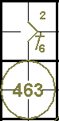
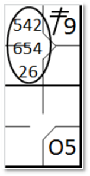
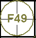
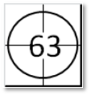
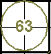

An assist is a statistic credited to a fielder whose action contributes to a batter-runner or runner being put out [OBR9.10].
An assist shall be credited to each fielder who:
Throws or deflects a batted or thrown ball in such a way that a putout results,
or would have resulted except for a subsequent error by any fielder. Only one assist and no more shall be
credited to each fielder who throws or deflects the ball in a run-down play that results in a putout,
or would have resulted in a putout, except for a sub sequent error
[OBR 9.10(a)(1)];
Comment:
ineffective contact with the ball shall not be considered an assist. ‘Deflect’
shall mean to slow down or change the direction of the ball and thereby effectively assist in putting out
a batter or runner. If a putout results from an appeal play within the natural course of play, the official
scorer shall give assists to each fielder, except the fielder making the putout, whose action led to the
putout. If a putout results from an appeal play initiated by the pitcher throwing to a fielder after the
previous play has ended, the official scorer shall credit the pitcher, and only the pitcher, with an
assist
[OBR 9.10(a)(1) Comment].
Throws or deflects the ball during a play that results in a runner being called out for interference, or for running out of line [OBR 9.10(a)(2)];
| The assist should be recorded with a vertical stroke in column ‘A’ of the defense, in correspondence with the position in defense of the respective fielder. |
|
The same fielder may nevertheless be credited with an assist and a putout, or an assist and an error.
Do not credit an assist to [OBR 9.10(b)(1), (2), (3)]:
The pitcher on a strikeout, unless the pitcher fields an uncaught third strike and makes a throw that results in a putout;
The pitcher, when, as the result of a legal pitch received by the catcher, a runner is put out, as when the catcher picks a runner off base, throws out a runner trying to steal, or tags a runner trying to score; or
A fielder whose wild throw permits a runner to advance, even though the runner subsequently is put out as a result of continuous play.
A play that follows a misplay (whether or not the misplay is an error) is a new play, and the fielder making any misplay shall not be credited with an assist unless such fielder takes part in the new play.
Example 33:
With a runner on first base the batter hits a ground ball to the third baseman, who deflects the ball towards
the shortstop, who catches it and throws to second in time to put out the runner.
Credit assists to both the third baseman and the shortstop, and a putout to the second baseman.
| WBSC | Translation in the scoring tool | Tool |
|---|---|---|

|
/* The first batter reaches first base on a 'Base on Ball' */ action { batter -> BB } /* The second batter reaches first base on a defensive choice of the fifth baseman. The fifth baseman throws to the shortstop, who throws to the second baseman to get out the runner coming from first. */ action { batter -> O5 , runner1 -> 564 } |

|
Example 34:
With a runner on first base, the batter hits a ground ball to the second baseman, who throws to the shortstop
too late to put out the runner.
The shortstop throws to the first baseman who puts out the batter-runner.
Credit assists to both the second baseman and the shortstop and a putout to the first baseman.
| WBSC | Translation in the scoring tool | Tool |
|---|---|---|

|
/* The first batter hits a hit on the short stop */ action { batter -> 1B6 } /* The second batter hits a ground ball which is caught by the second baseman. He relays the ball to the shortstop to try and get the runner out, but is unsuccessful. The shortstop then relays the ball to the first baseman to get the runner out. */ action { batter -> 463 , runner1 -> + } |
 |
Example 35:
With a runner on second base the batter hits a ground ball to the third baseman, who catches the ball and
throws it to second, catching the runner off base.
This leads to a rundown play.
The ball is passed from one fielder to another (third baseman, second baseman, catcher, shortstop, third
baseman, second baseman, catcher) until the shortstop makes a putout. Write the complete rundown on the score-sheet
but credit only one assist to the third baseman, the second baseman, the shortstop and the catcher and a putout to
the shortstop.
| WBSC | Translation in the scoring tool | Tool |
|---|---|---|
|
 |
/* The first batter hits a double on the right field */ action { batter -> 2B9 } /* The second batter hits a ground ball to third base, reaching base on a defensive pick. The runner coming from second base is trapped. */ action { batter -> O5 , runner2 -> 54265426 } |

|
Example 36:
The batter hits a ground ball to the third baseman, who catches it in time to put him out at first base, but
throws wild to the first base.
The batter-runner advances towards second base but is put out by the shortstop assisted by the right fielder,
who caught the ball thrown by the third baseman. Charge an error to the third baseman, an assist to the right fielder
and a putout to the shortstop.
| WBSC | Translation in the scoring tool | Tool |
|---|---|---|

|
/* The batter hits a ball toward the third baseman, who makes a mistake throwing
back to first. The running back takes advantage and tries to reach second. The ball is recovered by the right
fielder, who throws at shortstop to put out the running back. */ action { batter -> E5T 96 } |

|
Example 37:
The batter hits a slow ground ball towards the third baseman, who catches it too late to put him out at first
base, but throws in any case, muffing the throw.
The batter-runner continues towards second base but is put out by the shortstop, assisted by a throw from the
right fielder, who caught the ball thrown by the third baseman. Credit an assist to the right fielder and a putout
to the shortstop.
| WBSC | Translation in the scoring tool | Tool |
|---|---|---|

|
/* The batter hits a ball toward the third baseman. The running back tries to reach
second. The ball is recovered by the right fielder who throws at shortstop to get the running back out */ action { batter -> 1B5 96 } |

|
Example 38:
The batter is struck out but on the third strike the catcher fails to catch the ball, which bounces against
the protective barriers behind him and back onto the field.
The pitcher catches the ball and assists the first baseman in a putout. Credit an assist to the pitcher and
a putout to the first baseman.
| WBSC | Translation in the scoring tool | Tool |
|---|---|---|

|
/* Third strike called, the pitcher recovers the ball and throws it back to the
first baseman to get the batter-runner out */ action { batter -> KS13 } |
Example 39: The batter hits a difficult high ball between second base and the right fielder. The second baseman runs back and, jumping to make the putout, deflects the ball with his glove but fails to catch it. Before the ball lands the right fielder catches it and makes the putout. Credit an assist to the second baseman and a putout to the right fielder. Or
| WBSC | Translation in the scoring tool | Tool |
|---|---|---|

|
/* The batter hits a ball in the air. The second baseman touches the ball but doesn't
catch it, and the right fielder catches it before it hits the ground. */ action { batter -> F49 } |
 |
Example 40: The batter hits an easy high ball between second base and the right fielder. The second baseman tries to make the putout but merely deflects the ball with his glove. Before the ball lands the right fielder catches it and makes the putout. Credit an assist to second base and a putout to the right fielder. The action of the second baseman should be considered a misplay but not charged as an error, as the out is made.
| WBSC | Translation in the scoring tool | Tool |
|---|---|---|

|
/* The batter hits a ball in the air. The second baseman touches the ball but doesn't
it, and the right fielder catches it before it hits the ground. */ action { batter -> F49 } |
Example 41: The batter hits an easy ground ball towards third base, who deflects the ball but fails to catch it. It is caught by the shortstop who throws to first base in time to make the putout. Credit an assist to the shortstop and a putout to the first baseman. No assist is credited to the third baseman.
| WBSC | Translation in the scoring tool | Tool |
|---|---|---|
|
 |
/* The batter out on a hit to the shortstop, which relays to the third baseman. */ action { batter -> 63 } |
 |